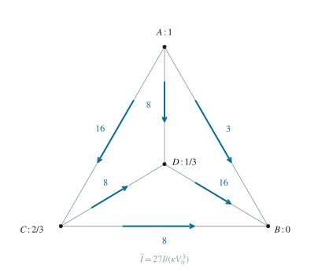

2.1 选取电势基准，写出节点方程
令 VB=0,VA=V0，并定义 x=VC/V0,y=VD/V0。每条边均按电势差的三次方计算电流，无须预先猜测内部电流的方向。节点 C,D 的流入电流等于流出电流，分别给出
16(1−x)3=x3+8(x−y)3, （2）16y3=(1−y)3+8(x−y)3. （3）例如第一式左边来自 A→C，右边依次来自 C→B 和 C→D；两边均已除以 κV03。
2.2 由严格单调性证明互补电势
定义 F(t)=16(1−t)3−t3。两个节点方程意味着 F(x)=F(1−y)。直接求导得到
F′(t)=−48(1−t)2−3t2<0(t∈R). （4）导数两项都不大于零，若和为零就须同时有 t=1 和 t=0，不可能，故导数严格为负。由中值定理，F 严格递减，F(x)=F(1−y) 强制 x=1−y。代回节点方程时，右边展开为 x3+8(8x3−12x2+6x−1)=65x3−96x2+48x−8，左边为 16−48x+48x2−16x3。移项得 81x3−144x2+96x−24=0，除以三后再分解：
16(1−x)30=x3+8(2x−1)3,=27x3−48x2+32x−8=(3x−2)(9x2−10x+4). （5）乘开 (3x−2)(9x2−10x+4) 得 27x3−48x2+32x−8，所以分解无误。二次因子也可写成 9(x−5/9)2+11/9，始终为正；等价地其判别式为 100−144=−44<0。因此只能由 3x−2=0 得实根，再用 y=1−x 得
x=32,y=31,VC=32V0,VD=31V0. （6）
图 2. 各节点的归一化电势与六条边的电流；电流标数均以 κV03/27 为单位。
2.3 计算端口电流与等效电阻
从端点 A 流出的三支电流为
IABIACIAD=9κV03,=16κ(3V0)3=2716κV03,=κ(32V0)3=278κV03. （7）将它们相加，得到端口特性及工作点上的电压与电流之比：
Itot=κV03,Req=ItotV0=κV021. （8）内部支路还有 ICB=8κV03/27、IDB=16κV03/27、ICD=8κV03/27，方向依次为 C→B,D→B,C→D。于是 C 点满足 16=8+8，D 点满足 8+8=16，与电流守恒相符。